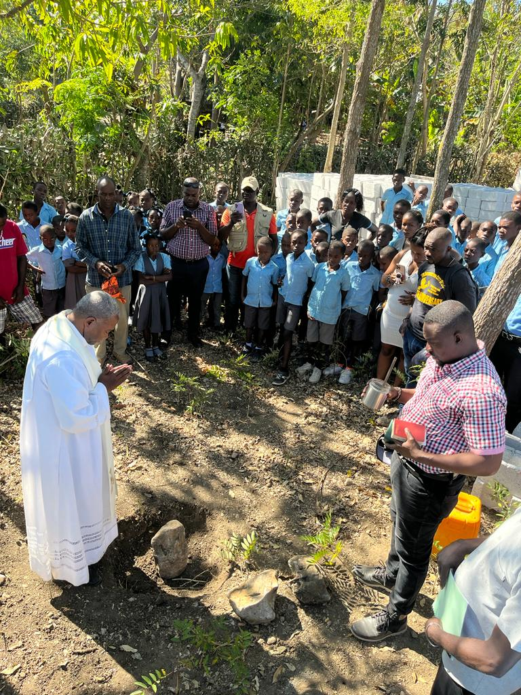
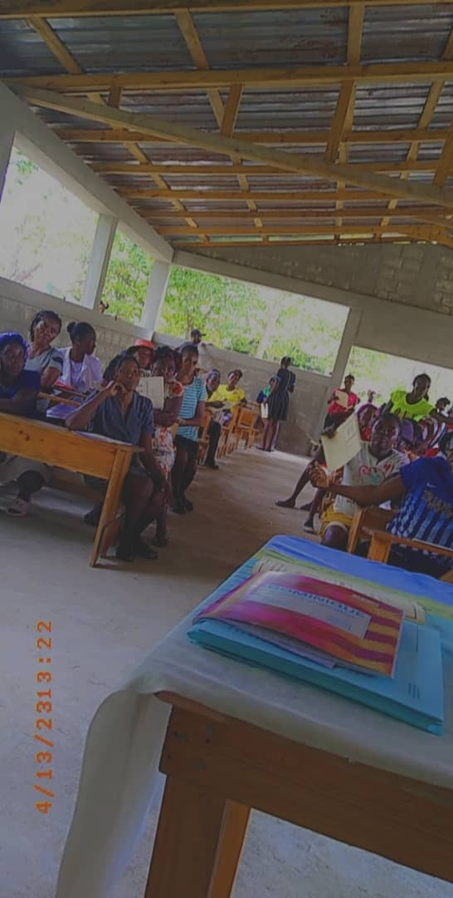

Solidarité Haïti est composé de bénévoles qui siègent à son conseil d'administration. Chaque année, lors de son assemblée générale anuelle (AGA), en mai, les États financiers de l'année précédente sont présentés à tous les membres, qui sont obligatoirement invités par courriels ou par notre page Facebook. Le président fait rapport par écrit de toutes nos activités. Tous les membres qui le demandent recevront une copie électronique des États financiers et du rapport du président.
Notre page Facebook informera régulièrement de nos activités.
Les projets d'agriculture paysanne que nous soutenons encouragent l'autonomie des paysans; en produisant de plus en plus leur propre nourriture, ils peuvent réduire leur dépendance aux aliments importés qui coûtent très cher.
En savoir plusDans les milieux ruraux, plusieurs paysans n'avaient pas accès à l'école. Solidarité-Haïti a supporté la construction d'écoles et le soutien au personnel afin de permettre à plus de gens d'avoir accès à une bonne éducation.
En savoir plusBien souvent, les habitants ne disposent pas d'un milieu de vie salubre, ce qui nuit énormément à leur santé et à leur dévéloppement. Ils sont constamment en mode survie. Ces projets visent à améliorer leurs conditions de vie.
En savoir plusSolidarité-Haïti est un organisme qui se consacre à soutenir des projets de développement économique et social en Haïti. Chaque projet qu'accepte de soutenir Solidarité-Haïti est proposé par les paysans eux-mêmes et fait l'objet de discussions de groupe pour déterminer les priorités. Ainsi, les projets acceptés sont faits pour et par les paysans.
Solidarité-Haïti s'efforce en même temps de sensibiliser les gens d'ici à la solidarité, plus particulièrement avec les communautés paysannes les plus dépourvues d'Haïti. En collaboration avec nos partenaires sur le terrain, nous apportons une contribution appréciable à la réalisation de divers projets éducatifs et socio-économiques. Par son nom même, l'organisme invite à venir en aide à ceux qui font appel à notre sens du partage pour leur redonner l'espoir d'améliorer leurs conditions de vie. Grâce à notre soutien, nous avons réussi à le faire dans les quelques régions délimitées où nous nous sommes impliqués.
Faire un don
À proximité de l'école Paul et Isabelle Côté, un nouveau projet a germé : une clinique médicale sera aménagée avec le soutien financier d'un organisme américain.
Voir la nouvelle
Le 13 avril a eu lieu la remise des carnets et des bulletins à l'école Paul et Isabelle Côté.
Voir la nouvelle